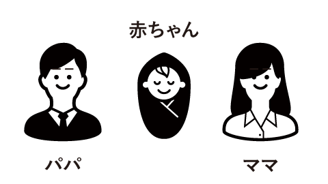
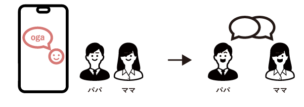

LOGO/UIUX
Oga
エイチームサマーインターン３位入賞
2018/9/7〜2018/9/9
赤ちゃんが投稿する日記サービス
THEME
新米パパとママのコミュニケーションを円滑にするサービス
チームを組み新米パパママをめぐる問題点を深堀りし、最終的にサービスを設計し、アプリやwebサイトの実装画面のUIデザインを行った。
TARGET
子供のことをもっと知りたい、もっとパートナーに教えてあげたい、思い出を共有したい夫婦
SERVICE CONCEPT
赤ちゃんが夫婦のコミュニケーションを豊かにするサービス
私たちのチームは新米パパママとのコミュニケーションの間には、赤ちゃんが関わっていることが多く夫婦間だけで解決するのではなく、赤ちゃんを中心においたコミュニケーションを図ることで円滑になるのではないか、と考えた
DESIGN CONCEPT
赤ちゃんの気持ちを可視化することによって、 パパとママがコミュニケーションできるデザイン
赤ちゃんの投稿から、赤ちゃんの気持ちが直感的にわかるUI,赤ちゃんの投稿により、パパママのコミュニケーションを促すUIを目指した。また、赤ちゃんがメインなので可愛らしく、優しいイメージで作成した。
DESCRIPTION
赤ちゃんが投稿する日記アプリ
赤ちゃんの鳴き声をスマートスピーカーで検知、それらを赤ちゃんの投稿としてバナーとアイコンで表示。それにパパとママがコメントを投稿することができる。また、過去の投稿を見ることができる
1.赤ちゃんの投稿
2.投稿へのコメント
3.過去の投稿が見れる
1.赤ちゃんの投稿
・録音した声を感情別に分類して表示する
特徴的な声をアイコンで普段の声を色で声の種類別に可視化
・投稿された声を流す
アイコンを押すとスピーカーで録音した声が流れる
・特徴的な声を通知する
大泣きや、言葉をしゃべる、変な声を通知
2.投稿へのコメント
・赤ちゃんの投稿に対するコメントを残せる
真ん中のバナーを押すと投稿画面に移り、ワンタッチで写真やコメントを送ることができる
2.投稿へのコメント
・過去の投稿をみる
カレンダー表示から過去の日記に遡る
サムネイルを入れることによって過去の出来事を思い出しやすくなる仕組み